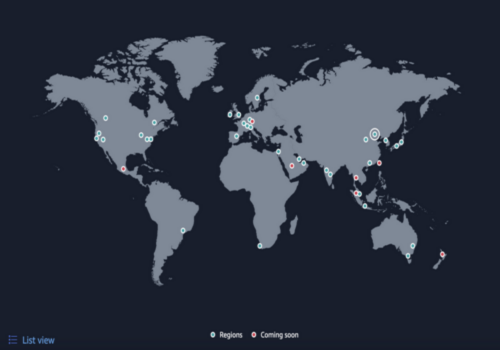
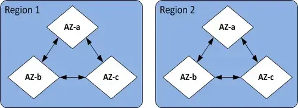
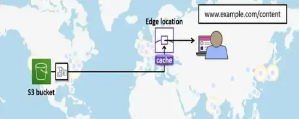

+593Freelance
Introducción básica sobre la nube de AWS, un vistazo a su infraestructura, modelo de pago y sus principales servicios.
Amazon Web Services o más conocido como AWS, es una plataforma de servicios en la nube que proporciona recursos de computación enfocados principalmente en entornos empresariales bajo demanda. AWS provee múltiples servicios de informática de forma rápida y escalable, como servicios de cómputo, almacenamiento, bases de datos, seguridad y redes.
AWS fue lanzada el año 2006 y es perteneciente al holding de empresas de Amazon liderado por el empresario Jeff Bezos. Destacando que, AWS es la plataforma en la nube más completa del mercado, ofreciendo más de 200 servicios a disponibilidad del usuario.
Actualmente (año 2024), la nube de AWS abarca 105 zonas de disponibilidad en 33 regiones geográficas, con el anuncio de que existen planes para crear 21 zonas de disponibilidad más y 7 regiones de AWS más en Malasia, México, Nueva Zelanda, el Reino de Arabia Saudí, Tailandia, Taiwán y la nube soberana europea de AWS.
A continuación describiremos los conceptos clave para comprender la infraestructura de AWS, los cuales son:
Una región es una zona geográfica física en donde AWS ha implementado sus datacenters. Destacando que una región NO es un país y cada una de las regiones está conformada por zonas de disponibilidad.
Una región está compuesta por múltiples zonas de disponibilidad. Estas zonas de disponibilidad están ubicadas en la misma zona pero separadas geográficamente una de otra de manera estratégica, a su vez, están conectadas en una red redundante ofreciendo latencia ultra baja para sus clientes.
Una zona de disponibilidad se conforma por 2 o más datacenter. Estos datacenter están ubicados en la misma zona de disponibilidad. A su vez, se dice que estos datacenter están separados por 75 km y que cada uno de estos datacenter tiene su propia fuente de alimentación, su propia fuente de ventilación y su propia conectividad de red.
Las “Edge Locations” (ubicaciones de borde) en AWS son puntos de presencia de la red distribuidos estratégicamente en diferentes ubicaciones geográficas en todo el mundo.
Estas Edge Locations forman parte de la infraestructura global de AWS y son utilizadas para mejorar la velocidad de entrega de contenido y reducir la latencia para los usuarios finales.
